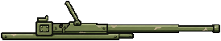
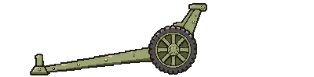

Poljski top · novi piksel art
Izvorni crtež je precrtan u stilu postojećih posada. Cev sa zatvaračem i lafet sa točkom su odvojeni providni PNG-ovi. Zajednički model prikazan je uz partizansku i italijansku posadu; ovo nije izbor dva nova istorijska tipa topa.
Učitavanje…
Prikaz koristi merilo delova iz sadašnje igre (0,75 ekranskog piksela po pikselu resursa) i ne menja igru. Nova slika lafeta nema naslikanu travu ni podlogu. Zglob je izmeren na novom crtežu i naveden u metapodacima; usklađivanje sa telom i sudarima pripada kasnijoj integraciji.
Obe posade u merilu igre

Odvojeni delovi
Cev i zatvarač · 274×52 px

Lafet i točak · 400×99 px

Animirana proba nišanjenja · Mere i zglobovi · Izvori i tačni promptovi